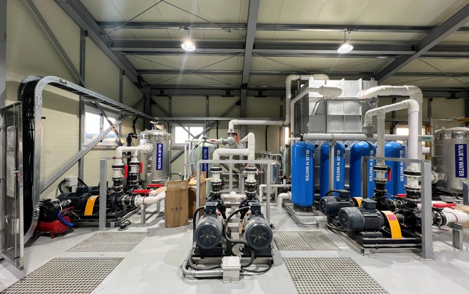
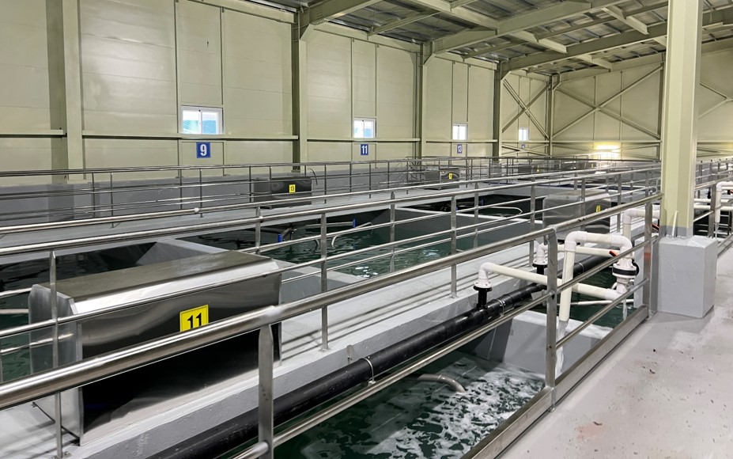
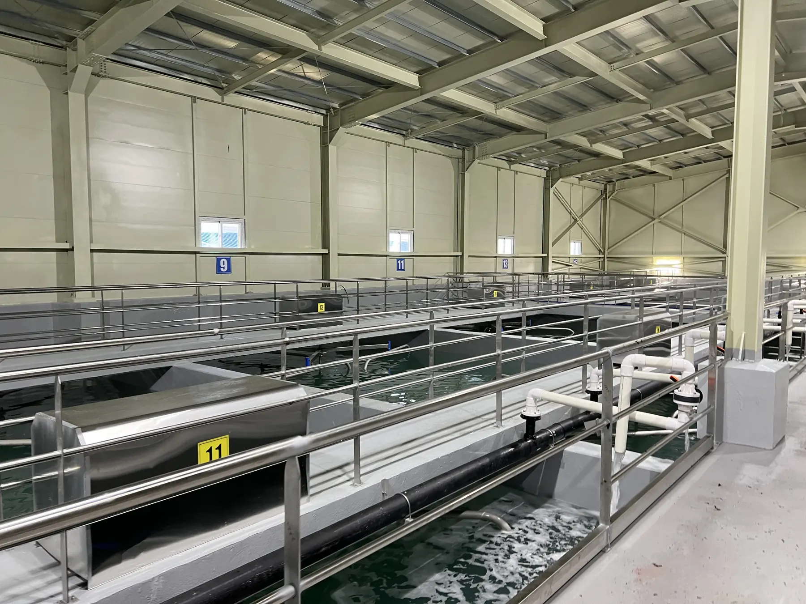

BLUE N WATER
김정수 / 식품가공수
김, 연육, 어묵, 농수산 가공 공정에서 발생하는 세척수와 폐수를 처리하여 재이용 가능성을 높이는 솔루션입니다.
김, 연육, 어묵, 농수산 가공 공정에서 발생하는 세척수와 폐수를 처리하여 재이용 가능성을 높이는 솔루션입니다.


Field Reference
식품가공수 재이용 현장
김 가공 폐수, 절임배추 공정수 등 식품가공 현장에서 발생하는 공정수를 처리·재이용하는 레퍼런스입니다.

AQUACOM / RaDX Applied Site
김 가공 폐수, 절임배추 공정수 등 식품가공 현장에서 발생하는 공정수를 처리·재이용하는 레퍼런스입니다.

